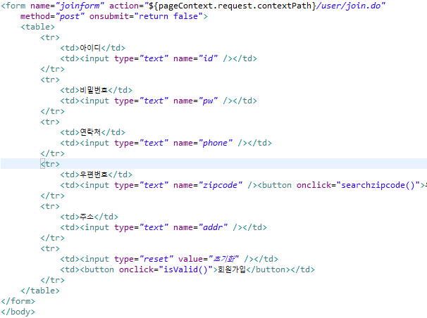
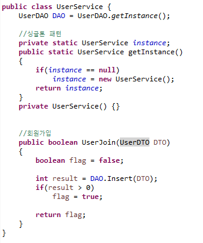

DBCP Collections pool

1. 회원가입 폼을 만들기전에 sql파일을 만들어 테이블을 만들 sql문을 작성한다
2. 만든 sql문을 MySQL에서 실행시켜준다
3. 테이블의 컬럼값에 맞게 자바에서 DTO파일을 만들어 객체를 생성해준다
4. Alt+Shift+S를 눌러 Getter Setter , toString() , 디폴트생성자를 만들어준다
5. DBCP연결을 위해 관련 jar 라이브러리를 받아와서 lib에 추가해준다
DBCP
Collections
pool
6. web.xml파일을 열어 jdbc Resource를 추가해준다
7. Tomcat Server의 context.xml과 server.xml에 jdbc를 연결시켜준다
server.xml의 경우 Resource부분을 바꾸어 주어야 한다
8. DAO클래스를 만들어 기본 생성자 안에 DB와 연결시켜준다
9. 회원가입 폼을 만들어 내용을 받을 수 있도록 한다
10. isValid함수를 만들어 유효성 검증을 하고 form을 join.do와 연결시켜준다.

11. DAO에서 테이블로 데이터를 넣을 수 있게 INSERT를 만들어준다
12. Service 클래스를 만들어서 DAO에 대한 작업을 받아올 수 있게 한다.

13. 회원가입 폼으로부터 내용을 받아올 수 있도록 컨트롤러를 작성하여 Service에 넣어준다
14. 서버를 작동시켜서 데이터가 테이블로 정상적으로 insert 되는지 확인하자